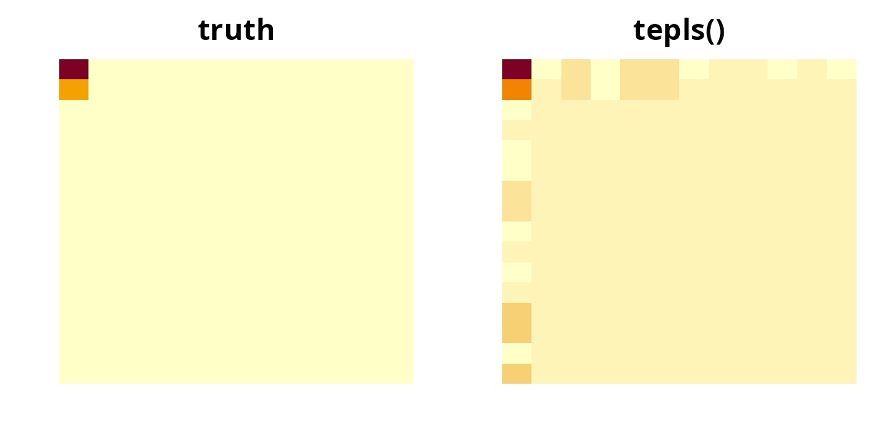

library(tensory)
#>
#> Attaching package: 'tensory'
#> The following object is masked from 'package:stats':
#>
#> reshape
#> The following object is masked from 'package:utils':
#>
#> find
#> The following object is masked from 'package:methods':
#>
#> kronecker
#> The following objects are masked from 'package:base':
#>
#> %*%, kronecker, scaleThe problem this solves
Each subject contributes a whole array — an image, a region-by-region connectivity matrix, a sensor-by-time grid — and one or more continuous outcomes. You want to predict the outcome from the array.
Flattening the array and calling lm() does not work. A
32 × 32 image is 1,024 predictors; with 200 subjects there is no unique
least-squares solution, and whatever a solver returns is fitting noise.
Flattening also discards the grid: it forgets that row 4 column 12 sits
beside row 4 column 13.
tepls() keeps the grid. It compresses each
dimension of the array separately into a few informative
directions, regresses the outcome on the compressed array, and then maps
the answer back so the coefficient has the same shape as your data. A 32
× 32 predictor reduced to 2 directions per mode leaves 4 numbers to
estimate instead of 1,024.
tepls() |
spgtr() |
|
|---|---|---|
| Outcome | continuous; several at once is fine | any GLM family (binary, count, …) |
| Extra covariates | no | yes, unpenalized |
| Selects whole slices | no | yes, via an L2,1 penalty |
| Cost | one closed-form pass | iterative |
For a continuous outcome and no covariates the two agree exactly when
spgtr() is given family = gaussian() and
basis = "simpls"; a check at the end of this article
confirms it. Reach for tepls() when that is your setting —
it is the cheaper, more direct route — and for spgtr() when
you need a non-Gaussian outcome, nuisance covariates, or slice
selection.
How to lay out your data
Two forms are accepted, and they are interchangeable.
A list, one array per subject. The most natural form. Every element must have the same dimensions.
set.seed(1)
p <- c(16, 12)
X <- lapply(1:150, function(i) matrix(rnorm(prod(p)), p[1], p[2]))
length(X)
#> [1] 150
dim(X[[1]])
#> [1] 16 12One big array with subjects in the last
mode. If your data already arrives as a
16 x 12 x 150 block, hand it over directly — no
reshaping.
The response is a numeric vector of length n, or an
n x r matrix if you have several outcomes per subject.
Quick start
We plant a signal in the top-left corner of the image: the outcome depends on the array through a single rank-one pattern, plus noise.
B_true <- outer(c(2, 1, rep(0, p[1] - 2)), c(1.5, rep(0, p[2] - 1)))
y <- vapply(X, function(xi) sum(B_true * xi), numeric(1)) + rnorm(150, sd = 0.5)
fit <- tepls(X, y)
fit
#> <tepls: tensor envelope PLS regression>
#> Predictor dims: 16 x 12
#> Envelope dims (u): 1 1
#> Response dim (r): 1That is the whole call. u was not supplied, so
tepls() chose the number of directions per mode for you.
The estimated coefficient is an array of the same shape as a subject’s
data:
B_hat <- as.tensor(coef(fit))$as_array()
dim(B_hat)
#> [1] 16 12
round(B_hat[1:4, 1:4], 2)
#> [,1] [,2] [,3] [,4]
#> [1,] 2.06 -0.15 0.22 -0.32
#> [2,] 0.99 -0.07 0.11 -0.15
#> [3,] -0.17 0.01 -0.02 0.03
#> [4,] -0.08 0.01 -0.01 0.01Only the corner is large, which is where we put the signal. A picture makes the point faster than the numbers:
op <- par(mfrow = c(1, 2), mar = c(2, 2, 2, 1))
image(t(B_true[p[1]:1, ]), main = "truth", axes = FALSE)
image(t(B_hat[p[1]:1, ]), main = "tepls()", axes = FALSE)
par(op)Predictions come from predict(), with no
newdata returning the fitted values:
Choosing the number of directions
u is the one knob: how many directions to keep in each
mode. u = c(1, 1) keeps one row-pattern and one
column-pattern (a rank-one coefficient); u = c(3, 2) keeps
three and two. Larger u means a more flexible fit and more
parameters — prod(u) of them.
Left at its default NULL, tepls() picks
each mode’s value from the largest gap between consecutive eigenvalues
of that mode’s signal matrix — the same rule spgtr() uses.
It is fast and usually sensible:
fit$u
#> [1] 1 1When you know the structure, say so:
tepls(X, y, u = c(1, 1))$u
#> [1] 1 1
tepls(X, y, u = 2)$u # a scalar is recycled across modes
#> [1] 2 2When you do not, cross-validate. There is no tepls_cv();
the fit is cheap enough that an explicit loop is clearer than a
wrapper:
cv_tepls <- function(X, y, u, nfolds = 5) {
n <- length(X)
fold <- sample(rep_len(seq_len(nfolds), n))
err <- vapply(seq_len(nfolds), function(f) {
tr <- which(fold != f)
te <- which(fold == f)
mean((predict(tepls(X[tr], y[tr], u = u), X[te]) - y[te])^2)
}, numeric(1))
mean(err)
}
set.seed(2)
grid <- list(c(1, 1), c(2, 1), c(2, 2), c(3, 3))
data.frame(
u = vapply(grid, paste, character(1), collapse = " x "),
mse = vapply(grid, function(u) cv_tepls(X, y, u), numeric(1))
)
#> u mse
#> 1 1 x 1 2.935611
#> 2 2 x 1 3.136265
#> 3 2 x 2 2.962494
#> 4 3 x 3 3.145656The prediction error is flat once u is large enough to
hold the signal and climbs as extra directions start fitting noise.
Prefer the smallest u within noise of the best.
Several outcomes at once
Pass a matrix response and every column is fit jointly, sharing one set of per-mode directions. The coefficient gains a trailing mode, one slice per outcome.
Y <- cbind(
y,
vapply(X, function(xi) sum((2 * B_true) * xi), numeric(1)) + rnorm(150, sd = 0.5)
)
mfit <- tepls(X, Y, u = c(1, 1))
mfit$r
#> [1] 2
dim(as.tensor(coef(mfit))$as_array())
#> [1] 16 12 2
dim(predict(mfit))
#> [1] 150 2Sharing the directions is the point: the two outcomes here are driven by the same image pattern, and fitting them together estimates that pattern from twice the data.
What is in the fit
names(fit)
#> [1] "coef" "W" "intercept" "Xbar" "dims" "u"
#> [7] "r" "fitted"-
coef— the coefficientTensor, in the shape of your predictor (with a trailing response mode when there is more than one outcome). Also reachable ascoef(fit). -
W— one matrix per mode,p_k x u[k], whose columns are the directions kept in that mode. These are what the method learns. -
u,dims,r— the shape of the problem. -
intercept,Xbar— the response mean and the predictor mean used for centering;predict()needs both. -
fitted— in-sample predictions.
The per-mode directions are interpretable on their own. Here the first mode’s direction should be concentrated on rows 1 and 2, and the second mode’s on column 1:
round(fit$W[[1]][1:4, 1, drop = FALSE], 3)
#> [,1]
#> [1,] 0.835
#> [2,] 0.400
#> [3,] -0.070
#> [4,] -0.033
round(fit$W[[2]][1:4, 1, drop = FALSE], 3)
#> [,1]
#> [1,] 0.958
#> [2,] -0.070
#> [3,] 0.102
#> [4,] -0.147Subjects’ compressed coordinates — the latent scores — are
the centered predictor projected onto those directions —
prod(u) numbers per subject, so just one apiece here. They
are useful for plotting or as input to another model:
Evaluating honestly
In-sample R^2 is optimistic. Hold data out.
set.seed(3)
tr <- sample(150, 100)
te <- setdiff(1:150, tr)
f <- tepls(X[tr], y[tr], u = c(1, 1))
oos <- predict(f, X[te])
c(in_sample = cor(predict(f), y[tr])^2,
out_sample = cor(oos, y[te])^2)
#> in_sample out_sample
#> 0.8230258 0.7387680predict() accepts new data in either input form, and
checks that its dimensions match the fit:
How it works
tepls() implements Algorithm 4 of Zhang & Li
(2017).
- Center the predictor and response.
-
Marginal covariances. For each mode
k,Sigma_kaveragesX_(k) X_(k)'over subjects — how variable the array is along that mode. (This step runs in C++ when the compiled kernel is available.) -
Cross-covariance.
Cis the array of covariances between each predictor cell and the response — where the signal is. -
Per-mode signal matrix.
M_k = C_(k) (kron_{j != k} Sigma_j^-1) C_(k)'standardizesCalong every mode butk, soM_kmeasures signal in modekafter accounting for the others. -
SIMPLS deflation. The leading eigenvector of
M_kis the first direction; project it out (in theSigma_kmetric) and repeat,u[k]times. This givesW_k. -
Reduced regression. Project every subject onto
W_1 kron ... kron W_mand regress the response on the resultingprod(u)scores by least squares. -
Map back.
B = W (reduced coefficient), reshaped to the predictor’s shape (their Lemma 2).
Nothing here is iterative, and nothing inverts a
prod(p) x prod(p) matrix — only the per-mode
p_k x p_k ones. That is why n can be far
smaller than prod(p).
Relation to the reference implementation. The
mode-k second-moment matrix built in step 4 is identical to
the U U' matrix in TEReg::TensPLS_fit. Two
deliberate divergences: that package estimates each mode’s basis with an
envelope (EnvMU) optimizer, whereas tepls()
runs the SIMPLS deflation of Algorithm 4 exactly; and the reduced
regression here is plain least squares on the latent scores (Step 6),
which is invariant to the scale ambiguity of the separable covariance,
so no Kronecker scale needs pinning.
Two identities worth knowing
Keeping every direction is ordinary least squares.
With u = p nothing is discarded, and the fit must coincide
with lm() on the flattened predictor:
set.seed(4)
ps <- c(3, 2)
Xs <- lapply(1:200, function(i) matrix(rnorm(prod(ps)), ps[1], ps[2]))
ys <- vapply(Xs, function(xi) sum(xi[1:2]), numeric(1)) + rnorm(200, sd = 0.2)
full <- tepls(Xs, ys, u = ps)
ols <- lm(ys ~ t(vapply(Xs, as.vector, numeric(prod(ps)))))
max(abs(as.vector(as.tensor(coef(full))$as_array()) - unname(coef(ols)[-1])))
#> [1] 5.434164e-11spgtr() with a Gaussian family and the SIMPLS
basis is the same model.
a <- tepls(X, y, u = c(2, 2))
b <- spgtr(X, y, u = c(2, 2), family = gaussian(), basis = "simpls")
max(abs(as.vector(as.tensor(coef(a))$as_array()) - b$bvec))
#> [1] 9.763435e-11If either identity ever breaks, something is wrong with the centering, the score map, or the reconstruction — both are in the test suite for that reason.
Limits
-
Continuous outcomes only. Binary or count outcomes
belong in
spgtr(). -
No covariates. Age, sex, batch and the like cannot
be entered unpenalized;
spgtr()’sZargument does that. -
No sparsity. Every row and column of the array
contributes. When you need “which slices matter”, use
spgtr()withlambda > 0. - No standard errors. The coefficient is a point estimate. Bootstrap the subjects if you need uncertainty.
-
uis not free. Choose it by cross-validation when the eigenvalue-gap default is not obviously right — withprod(u)parameters, a too-largeuoverfits like any other model.